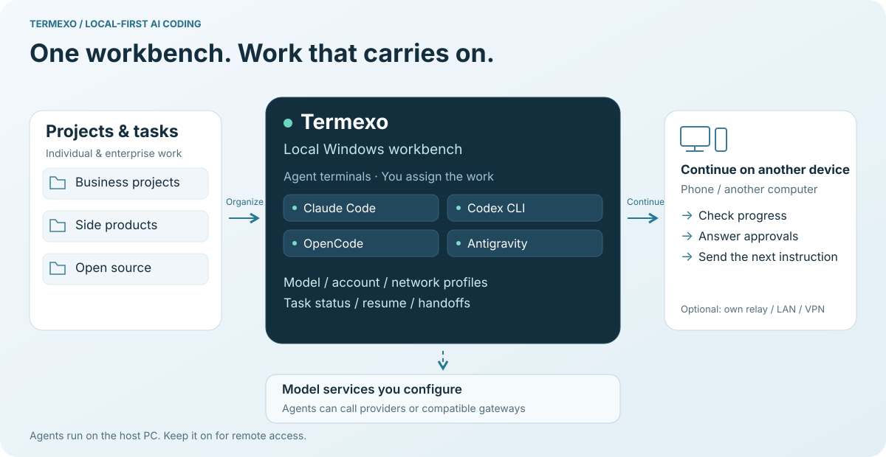
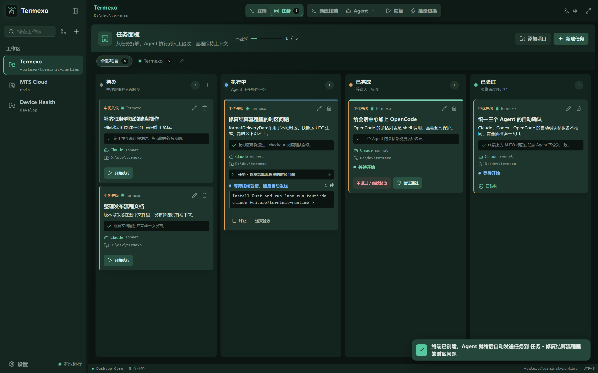

Run Claude Code, Codex, OpenCode and more in one Windows workspace. See which agent is working or waiting, resume native sessions, and return from your phone when needed.
Phone access is optional. Keep your PC running and use a reachable HTTPS relay plus a desktop access token, or connect directly over a trusted LAN or VPN.
Claude CodeCodex CLIOpenCodeAntigravityGrok BuildTask boardMulti-accountDeepSeekMiniMaxGLMMCPNative PTY
DIRECTION / USE CASES
Keep your AI development work connected.
Multiple projects and coding agents can mean scattered windows, missed approvals, and context to explain all over again. Termexo brings the work into view and helps you pick up where you left off.

Workflow illustration. People assign tasks and approve actions; agents keep running on the host PC.
FOR INDIVIDUALS
More projects. Less switching.
Work, side projects, open source
Keep each project's terminals, models, and layout together. Assign agents to implementation, tests, and review, then see who needs you.
Continue tomorrow, or with another agent
Find a saved native session or prepare a handoff with the goal, progress, and next step. Spend less time repeating the background.
Step away without losing touch
Leave your PC running and reconnect from your phone to check output, answer an approval, or send the next instruction.
FOR ENTERPRISE DEVELOPERS
Organize the work. Keep control.
Project work engineers can follow
Group business projects into workspaces. Engineers use the task board and agent status to assign work, review results, and prepare handoffs.
Providers and environments in one place
Manage model, account, and network profiles for different providers and compatible gateways, with quota visibility where supported.
Access to the development PC you manage
Run the workbench on your organization's Windows PC. Use your own relay or trusted LAN / VPN to reconnect to long-running tasks.
01 / WORKBENCH
See which agent needs you.
Run supported coding agents in real terminals. Their states stay visible across projects, so you can find the one waiting for your input and return to a native session later.
Antigravity · Two real sessions
30-second real recording · v0.10.6
Two real Antigravity sessions in v0.10.6: completion notifications, returning to a session, replying, and split view. Waiting intervals are cut; bilingual captions are included.
∞Open as many as you want
Every session stays alive in a tab. Show the ones you are watching
right now.
6 × 6Arrange your own grid
Anything from 1 to 6 rows and columns. Each project remembers its
own layout.
5+Swap the model, keep the CLI
Same Claude Code you already know, pointed at a different
provider.
0Local by default
Your workbench runs on your PC. Remote access is optional, through a relay you manage or a trusted LAN / VPN.
02 / NEVER MISS ONE
It tells you when an agent is stuck.
An agent sitting on an approval prompt helps nobody if you are
looking at a different window. Termexo flashes the taskbar, sends a
system notification, and keeps a banner on screen until you deal
with it — for every project you have open, not just the one in front
of you.
Waiting for approval, waiting for input, and finished all look
different at a glance
Works even when the Termexo window is already focused
Click the banner to jump straight to that terminal
One agent needs a decision. The other is still working.Every local session, searchable and one click from
resuming
03 / NOTHING IS LOST
Pick up yesterday's conversation.
Search saved Claude Code, Codex, OpenCode, Grok Build, and
Antigravity sessions across projects. Termexo uses each CLI's own
resume command to reopen the native context, without changing
session files.
Search across every project by name, path, branch, or model
Resumes through each supported CLI's native command
Your session files are read-only — Termexo never edits or deletes
them
04 / MODEL ROUTING
Same CLI. Different model.
Keep using Claude Code, but point it at DeepSeek, MiniMax, GLM, or
your own compatible gateway. Save each one as a profile and switch
between them in two clicks — no reinstalling, no editing config
files by hand.
Anthropic, DeepSeek, MiniMax, GLM, or any compatible endpoint
API keys go into Windows Credential Manager, never a plain text
file
Switch every Claude terminal in a project at once
Keys are stored by Windows — the app only ever sees whether one
exists

A task carries its acceptance criteria from todo through to
verified
05 / TASK BOARD
Hand the work to an agent.
Write down what needs doing and what counts as done, pick the agent
and the project, and the task opens as a real terminal. It reports
its own progress back to the board, so you can see what is running
without reading every terminal at once.
Todo, executing, completed, verified — the terminal moves the card
Send a task to Claude Code, Codex, OpenCode, or Grok Build
Reject a result with a note and it goes back for another round
06 / ANY DEVICE
Your workbench. Across networks.
Your desktop opens an outbound tunnel to your relay. Open the relay link on a phone, tablet, or another computer to check output and continue the same terminal session. The desktop needs no public IP or router port forwarding.
Self-host termexo-relay; enroll your desktop with a code or relay account
Use an HTTPS browser entry point; v2 session frames are encrypted with AES-256-GCM
Keep your desktop on and Termexo connected; relay login and the desktop access token are separate checks
Find any past Claude Code, Codex, OpenCode, Grok Build, or Antigravity
sessions across your projects and reopen their native history.
claude --resume · codex resume · opencode --sessionWORKS TODAY
todoexecutingcompletedverified
☑
Hand a task to an agent
Write down the task and what counts as done, pick an agent,
and it opens as a real terminal that reports its own progress
back to the board.
WORKS TODAY
⇄
Try a cheaper model on the same task
Point the same CLI at a different provider, switch back if the
result is worse, and keep every key in secure storage.
ADMG+
WORKS TODAY
Claude CoreRUNNING
Claude ReviewWAITING APPROVAL
Codex TestsTHINKING
◉
Know the moment it needs you
Waiting, thinking, needs approval, done, failed — shown in the
tab, the panel, and the taskbar, across every project at once.
WORKS TODAY
文
Works in your language
Follow Windows automatically or switch between Chinese, English,
Spanish, French, German, Japanese, and Korean at any time.
中ENESFRDE日한
WORKS TODAY
Anthropic72%DeepSeek46%MiniMax84%
◔
See your quota before you burn it
Check supported providers' reported quota and reset time.
Grok Build shows an exhausted free allowance; unavailable
percentages stay unavailable.
WORKS TODAY
⌁
Reach your workbench across networks
A self-hosted relay connects your phone to the same desktop terminals. No public IP or router port forwarding on the desktop.
▱T▯
08 / ROADMAP
What comes next.
Everything above already works. Here is what has shipped, and what
is being built next — anything still marked planned is not being
sold as finished.
V0.3SHIPPED
Run several agents side by side
Claude and Codex detection, separate logins, resume, custom
grids, model profiles, seven interface languages, and everything
saved locally.
V0.4SHIPPED
Accounts, installs, and networks
Install or upgrade the CLIs in one click, keep several logins
apart, set up proxies for a company network, and watch how much
plan quota is left.
V0.5–0.6SHIPPED
Handing work between agents
Session summaries, moving a task from one agent to another,
routing work, and notifications.
V0.10.0–0.10.1SHIPPED
Remote relay access
Shipped in v0.10.0: self-hosted relay access, code or account enrollment, cascaded addresses, and v2 encrypted sessions. Your browser operates the terminals already running on your desktop.
V0.10.4YOU ARE HERE
Five agents, clearer progress
Grok Build joins the workbench. Session change counts and the Git view keep refreshing; terminals start quietly, and workspace rows can be dragged into order.
09 / PRIVACY
Your work. On your computer.
Termexo runs locally by default. Enable remote access when you need it: use your own relay or a trusted LAN / VPN, control the desktop access token, and disconnect from Settings. Your agent CLIs still connect to the model services you configure.
01
Local by default
Your project paths, sessions, terminal state, and settings sit
in a file on your disk. There is no cloud service to sign into.
02
Your API keys are not in a config files
Keys go into Windows Credential Manager. The app stores only a
reference, and the interface can tell you a key exists but never
show it back.
03
Your agent files are read-only
Termexo reads what Claude Code and Codex write, and uses their
own resume commands. It never rewrites, renames, or deletes your
session history.
BUILD WITH US
One command. No account.
The npm package includes the Windows app. Start locally without a Termexo account, then connect a self-hosted relay when you need access across networks.
Built in the open, under the MIT license. If Termexo helps your
workflow, a GitHub Star helps others discover it. Bug reports and
contributions are welcome too.